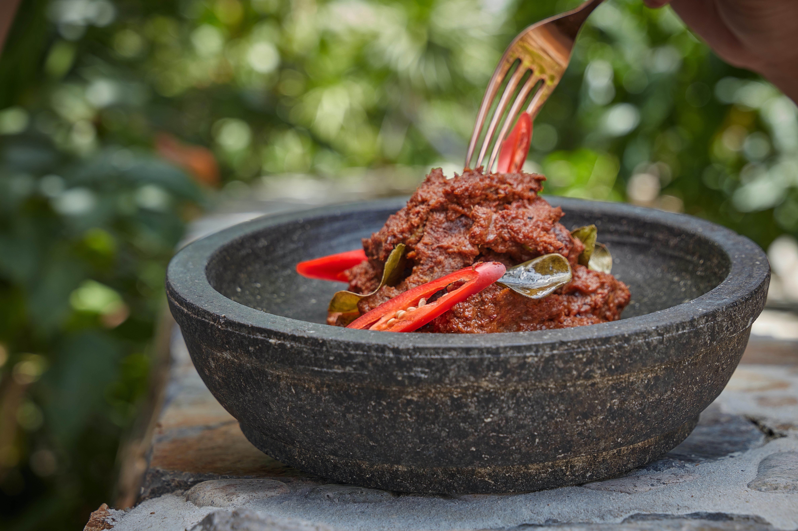

Rendang

Resep Rendang Daging
Dengan 500 gram daging sapi kita bisa lho bikin rendang daging yang enak dan pastinya bisa dibuat dirumah.
Bahan
- 500 gr dagin
- 1 batang serai geprek
- 3 lembar daun jeruk
- 2 lembar daun salam
- 1 ruas lengkuas geprek
- 2cm kayu manis
- 1 sdt gula merah
- 1 sdt kaldu sapi dan garam
- 1/2 sdt jintan bubuk
- 1/2 sdt merica bubuk
- jeruk nipis
- 500 ml santan dari 1/2 kelapa
Bumbu Halus
- 4 siung bawang putih
- 6 butir bawang merah
- 2 butir kemiri
- 1/2 sdt ketumbar
- 3 cabai merah besar ( buang bijinya )
- 2cm kunyit
- 3cm jahe
Cara Membuat:
- Cuci bersih daging, potong sesuai selera, beri perasan jeruk nipis, lalu cuci lagi!
- Haluskan bumbu, lalu tumis bumbu halus dengan serai, daun jeruk, daun salam, kayu manis, dan lengkuas sampai matang!
- Masukkan daging, aduk rata, lalu masukan santan. Masak dengan api kecil sambil sesekali diaduk!
- Kemudian masukkan garam, kaldu, jintan, merica, dan gula merah, diamkan hingga bumbu meresap dan airnya menyusut!
- Koreksi rasa, angkat, dan hidangkan!